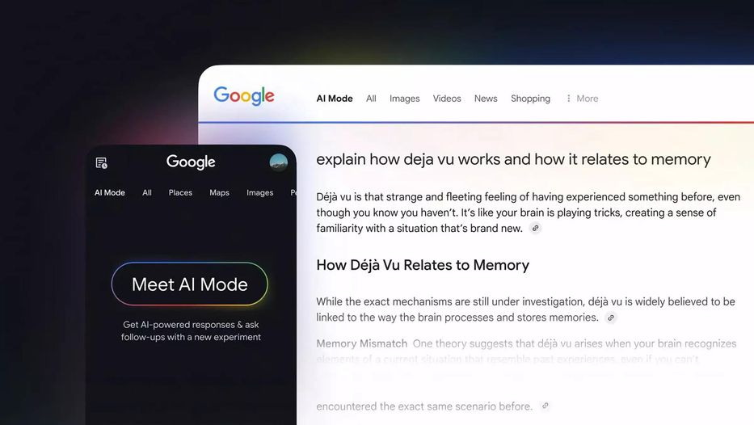

Ministerio de Cultura y ATU sensibilizan sobre la lucha contra el racismo en estaciones del Metropolitano
El Ministerio de Cultura (Mincul) y la Autoridad de Transporte Urbano para Lima y Callao (ATU) lanzaron una campaña conjunta
para sensibilizar a miles de usuarios del Metropolitano sobre la importancia de respetar y valorar nuestra diversidad cultural
y erradicar el racismo en el transporte público.
Publicado el 26/09/2025
Un tráiler que transportaba rocas en sus contenedores perdió el control, causando la muerte de un
conductor, que quedó atrapado y aplastado dentro de su automóvil. El accidente ocurrió
esta mañana en la Panamericana Norte, a la altura del paradero Las Tres Ruedas, en Puente Piedra.
Se anunció la modernización de la flota de buses urbanos con unidades ecológicas.
Publicado el 25/09/2025
Noticias Internacionales
El 90% de desarrolladores de software ya usan IA y 8 de cada 10 mejoran su productividad
La inteligencia artificial se convirtió en una herramienta casi universal para los
desarrolladores de software, según el informe anual DORA 2025 de Google.
El estudio, que recoge la opinión de cerca de 5.000 profesionales a nivel global, señala que un 90% de los desarrolladores
ya usan IA y que más del 80% perciben un aumento en su productividad.
En comparación con el año pasado, el uso de IA en la programación creció un 14%, y un 65% de los profesionales
la integran de manera intensiva en sus flujos de trabajo principales, dedicándole una mediana de dos horas diarias.

Publicado el 26/09/2025
Informe DORA 2025: El uso de IA alcanza el 90% y redefine el trabajo de los programadores
La industria tecnológica está viviendo una transformación profunda. Según el Informe DORA 2025, elaborado por Google,
el 90 % de los profesionales del desarrollo de software ya utilizan herramientas de inteligencia artificial (IA) en su trabajo diario.
Este dato representa un aumento del 14 % respecto al año anterior. La IA se ha convertido en una pieza clave en la creación, mantenimiento y
escalado de software moderno. De este modo, la adopción masiva de IA está cambiando la forma de programar y el perfil del programador.